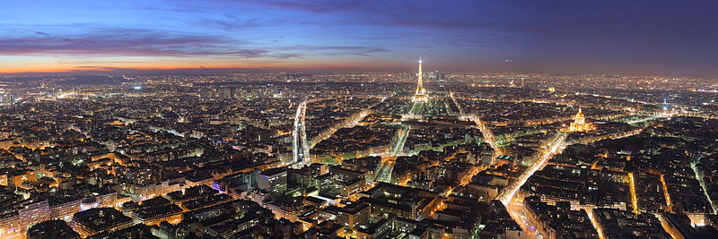
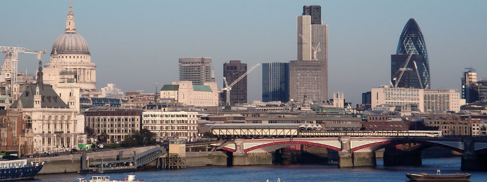

Europe
Paris 
According to Wikipedia , Paris (pronounced /ˈpærɪs/; French: [paʁi]) is the capital and largest city in France, situated on the river Seine, in northern France, at the heart of the Île-de-France region (or Paris Region, French: Région parisienne). The city of Paris, within its administrative limits (the 20 arrondissements) largely unchanged since 1860, has an estimated population of 2,211,297 (January 2008), but the Paris metropolitan area has a population of 12,089,098, (January 2008), and is one of the most populated metropolitan areas in Europe. Paris was the largest city in the Western world for about 1,000 years, prior to the 19th century, and the largest in the entire world between the 16th and 19th centuries.
London 
According to Wikipedia , London (/ˈlʌndən/) is the capital city of England and the United Kingdom, the largest metropolitan area in the United Kingdom, and the largest urban zone in the European Union by most measures . Located on the River Thames , London has been a major settlement for two millennia, its history going back to its founding by the Romans, who called it Londinium. London's ancient core, the City of London, largely retains its square-mile medieval boundaries. Since at least the 19th century, the name London has also referred to the metropolis developed around this core.